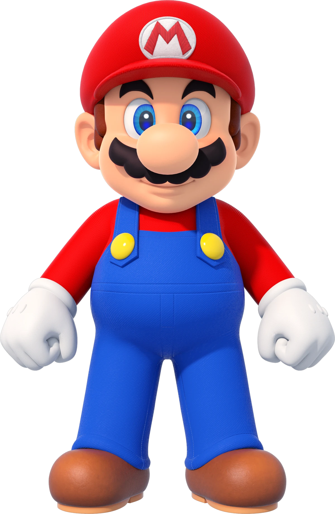

Mário
O Mário é um personagem fictício criado por Shigeru Miyamoto e é o protagonista da série de jogos Super Mario, desenvolvida pela Nintendo. Ele é um encanador italiano que vive no Reino do Cogumelo e é conhecido por sua habilidade de saltar, correr e coletar power-ups para enfrentar inimigos e resgatar a Princesa Peach.
Link
Link é o protagonista da série de jogos The Legend of Zelda, criada por Shigeru Miyamoto e Takashi Tezuka. Ele é um jovem herói que embarca em aventuras épicas para resgatar a Princesa Zelda e derrotar o vilão Ganon, explorando vastos mundos, resolvendo quebra-cabeças e enfrentando inimigos.
Sonic
Sonic the Hedgehog é um personagem icônico criado pela Sega. Ele é um ouriço azul super-rápido que luta contra o Dr. Robotnik (Eggman) para salvar seus amigos e o mundo. Sonic é conhecido por sua velocidade, atitude ousada e por coletar anéis dourados.

Master Chief
Master Chief, também conhecido como John-117, é o protagonista da série de jogos Halo
desenvolvida pela Bungie e 343 Industries. Ele é um supersoldado espartano que luta contra a Aliança Covenant e outras ameaças galácticas, sendo conhecido por sua armadura verde icônica e habilidades de combate excepcionais.

Doom Slayer
Doom Slayer, também conhecido como Doomguy, é o protagonista da série de jogos Doom, desenvolvida pela id Software. Ele é um marine espacial que luta contra hordas de demônios do inferno em uma batalha épica para salvar a humanidade, sendo conhecido por sua brutalidade e arsenal de armas.

Steve
Steve é o personagem principal do jogo Minecraft, desenvolvido pela Mojang Studios. Ele é um avatar jogável que pode explorar, construir e sobreviver em um mundo gerado proceduralmente, coletando recursos, criando ferramentas e enfrentando criaturas.
Trevor Philips
Trevor Philips é um dos protagonistas do jogo Grand Theft Auto V, desenvolvido pela Rockstar Games. Ele é um ex-militar e traficante de drogas que vive em Los Santos, conhecido por sua personalidade explosiva, comportamento imprevisível e habilidades de combate excepcionais.

TF2 Crew
Os personagens de Team Fortress 2, desenvolvidos pela Valve Corporation, são uma equipe de mercenários com habilidades únicas. Cada personagem tem sua própria classe, como o Soldado, o Médico e o Engenheiro, e eles lutam em batalhas multiplayer online, usando suas habilidades especiais para completar objetivos e derrotar os adversários.

Leon Kennedy
Leon S. Kennedy é um personagem icônico da série de jogos Resident Evil, desenvolvida pela Capcom. Ele é um agente especial que luta contra zumbis e outras criaturas mutantes em uma batalha para salvar a humanidade de ameaças biológicas, sendo conhecido por sua coragem, habilidades de combate e inteligência.